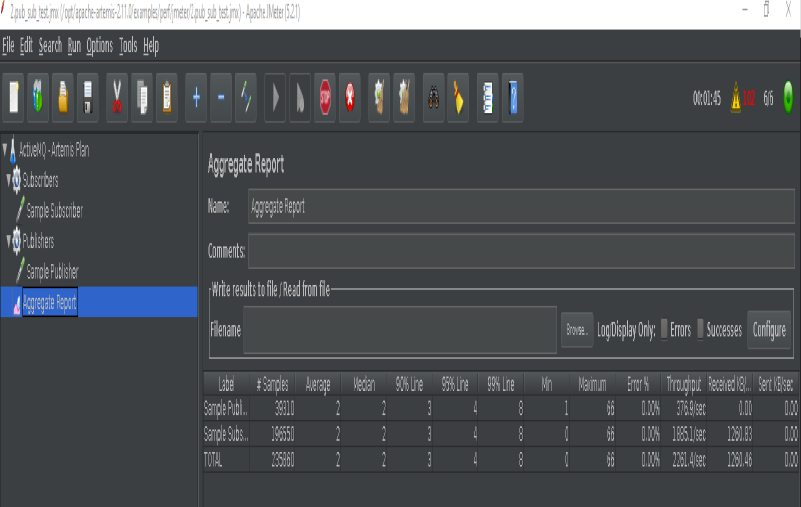
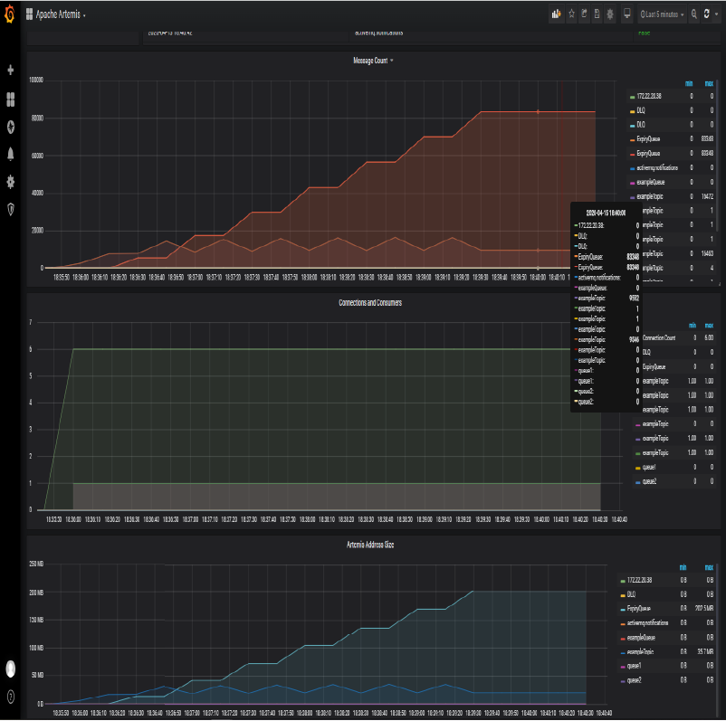
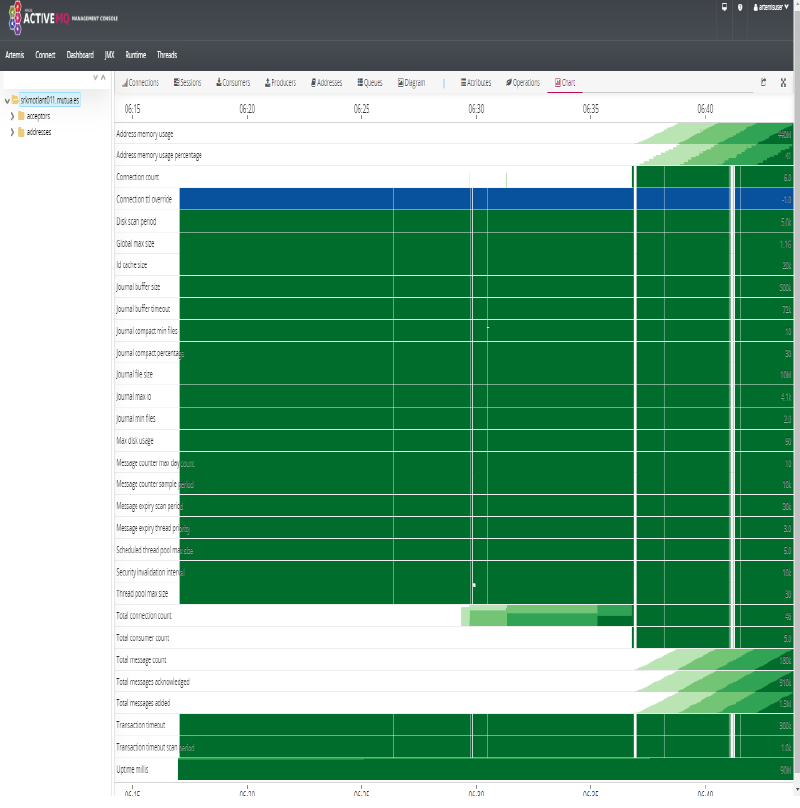

Prometheus
- Introduction
- AlertManager
- Prometheus Agent
- Promgen
- Promcat Resource Catalog
- Prometheus Demo
- Prometheus Storage
- Prometheus SLO Service Level Objectives
- Collectors. Software exposing Prometheus metrics
- Prometheus Alarms and Event Tracking
- Prometheus and Cloud Monitoring
- Prometheus Installers
- Prometheus Operator
- Prometheus SaaS Solutions
- Proof of Concept: ActiveMQ Monitoring with Prometheus
- Prometheus and Azure
- Managed Prometheus in AWS
- Managed Prometheus in GCP
- Videos
- Tweets
Introduction
- prometheus.io
- dzone.com: Monitoring with Prometheus Learn how to set up a basic instance of Prometheus along with Grafana and the Node Exporter to monitor a simple Linux server.
- github.com/prometheus/prometheus
- Monitoring With Prometheus
- Dzone Refcard: Scaling and Augmenting Prometheus Prometheus is an open-source infrastructure and services monitoring system popular for Kubernetes and cloud-native services and apps. It can help make metric collection easier, correlate events and alerts, provide security, and do troubleshooting and tracing at scale. This Refcard will teach you how to pave the path for Prometheus adoption, what observability looks like beyond Prometheus, and how Prometheus helps provide scalability, high availability, and long-term storage.
- Monitoring Self-Destructing Apps Using Prometheus Learn how to configure Prometheus collectors and their use cases.
- Monitoring kubernetes with Prometheus
- Focus on Detection: Prometheus and the Case for Time Series Analysis
- Ensure High Availability and Uptime With Kubernetes Horizontal Pod Autoscaler (HPA) and Prometheus
- Prometheus 2 Times Series Storage Performance Analyses
- Set Up and Integrate Prometheus With Grafana for Monitoring. How to set up and configure Prometheus and Grafana to enable application performance monitoring for REST applications.
- Discover Applications Running on Kubernetes With Prometheus
- Prometheus vs. Graphite: Which Should You Choose for Time Series or Monitoring?
- PromQL Tutorial
- How to use Ansible to set up system monitoring with Prometheus
- Initial experiences with the Prometheus monitoring system
- prometheus.io/docs/instrumenting/writing_exporters/
- devconnected.com/complete-node-exporter-mastery-with-prometheus/
- www.scalyr.com/blog/prometheus-metrics-by-example/
- Prometheus es un “time series DBMS” y sistema de monitorización completo, que incluye recogida de datos, almacenamiento, visualización y exportación.
- La arquitectura de Prometheus se basa en “pull metrics” (extracción de métricas). En lugar de empujar las métricas (“pushing metrics”) hacia la herramienta de monitorización, extrae (“pull”) las métricas de los servicios (por defecto un “/metrics” HTTP endpoint) en texto plano (parseable por humanos y de fácil diagnóstico). Prometheus también tiene un “push gateway”, de modo que también soporta “push” para métricas específicas cuando el modelo de “pull” no funciona (si bien este método no es recomendable).
- Prometheus se puede conectar a series de tiempo (time series) con un nombre de métrica y pares clave-valor, simplificando la monitorización en complejos entornos cloud multi-nodo.
- La herramienta también proporciona PromQL, para el procesado de datos “time-series”. Permite realizar consultas (queries) para la manipulación de datos y generar nueva información relevante. Con PromQL se pueden generar gráficos, visualizar conjuntos de datos, crear tablas, y generar alertas basadas en parámetros específicos.
- La consola web de Prometheus permite gestionar todas las características y herramientas disponibles en Prometheus. Se pueden utilizar expresiones regulares y consultas avanzadas de PromQL para la creación de conjuntos de datos (datasets) y alertas.
- Prometheus activamente “scrapea” datos, los almacena, y soporta “queries”, “gráficos” y “alertas”, así como proporciona “endpoints” a otros consumidores API como Grafana. Todo esto lo realiza con los siguientes componentes:
- Librerías cliente: instrumentación del código de aplicación (para generar eventos).
- Servidor Prometheus: “scrapeando” y almacenando estos eventos, cuando se generan, como “time series data”. Este es el modelo “pull” más común para la recogida general de métricas en Prometheus.
- Pushgateway: Modelo “Push”, soportando trabajos efímeros de importación de datos. Sólo recomendable en aplicaciones “serverless”, donde las aplicaciones son lanzadas y destruidas bajo demanda, así como las aplicaciones que manejan “batch jobs”.
- Exportadores de Datos: exportando servicios como HAProxy, StatsD, Graphite, etc.
- Prometheus se diferencia de otros sistemas de monitorización con las siguientes funcionalidades:
- Modelo de datos multi-dimensional, donde los “time-series data” se definen por el nombre de la métrica y dimensiones clave/valor.
- Nodos únicos de servidor y autónomos, sin dependencia de almacenamiento distribuido.
- Recogida de datos via un modelo “pull” sobre HTTP.
- “Time Series Data” empujado (“pushed”) a otros destinos de datos vía un gateway intermediario.
- “Targets” descubiertos via “service discovery” ó configuración estática.
- Soporte de federación horizontal y vertical.
- magalix.com: Monitoring of Kubernetes Clusters To Manage Large Scale Projects
- Cloud Native Monitoring with Prometheus 🌟
- itnext.io - Prometheus: yet-another-cloudwatch-exporter — collecting AWS CloudWatch metrics
- Prometheus Monitoring Ecosystem Begins to Mature
- learnsteps.com: Monitoring Infrastructure System Design
- ganeshvernekar.com: Prometheus TSDB (Part 1): The Head Block
- ganeshvernekar.com: Prometheus TSDB (Part 2): WAL and Checkpoint
- ganeshvernekar.com: Prometheus TSDB (Part 3): Memory Mapping of Head Chunks from Disk
- ganeshvernekar.com: Prometheus TSDB (Part 4): Persistent Block and its Index
- youtube playlist: How to setup Prometheus 🌟
- learndevops.substack.com: Hitting prometheus API with curl and jq 🌟 Determine offending pods that use more RAM than requested, causing OOM.
- devclass.com: Safety…first? Prometheus 2.24 finally features TLS on HTTP serving endpoints
- sysadminxpert.com: Steps to Monitor Linux Server using Prometheus
- medium.com: Prometheus-Grafana : Node Monitoring on Kubernetes
- zerodha.tech: Infrastructure monitoring with Prometheus at Zerodha
- devopscube.com: How to Setup Prometheus Monitoring On Kubernetes Cluster 🌟
- prometheus-operator.dev 🌟
- gabrieltanner.org: Golang Application monitoring using Prometheus
- promlens.com 🌟 The power tool for querying Prometheus. Build, understand, and fix your queries much more effectively with the ultimate query builder for PromQL
- timber.io: PromQL For Humans 🌟
- medium: Prometheus monitoring with Elastic Stack in Kubernetes 🌟 Monitoring is one of the key components for managing large clusters. For this, we have several tools.
- grafana.com: How we use metamonitoring Prometheus servers to monitor all other Prometheus servers at Grafana Labs If you rely on Prometheus for your monitoring, and your monitoring fails, how will you know? Learn how to set up Prometheus servers to monitor all other Prometheus servers
- portworx.com: Monitoring Kubernetes Backup with Prometheus and Grafana
- sysdig.com: Top 10 metrics in PostgreSQL monitoring with Prometheus 🌟
- itnext.io: Observability at Scale
- jonbc.medium.com: Hacking your way to Observability — Part 1 : Metrics Starting your journey in observability by gathering metrics with Prometheus
- innoq.com: Scraping a Docker swarm service with Prometheus
- opensource.com: Run Prometheus at home in a container
- faun.pub: Production grade Kubernetes Monitoring using Prometheus 🌟
- howtoforge.com: How to Install Prometheus System Monitoring Tool on Ubuntu 20.04
- cribl.io: Using Prometheus for Agentless Monitoring
- logz.io: Guide to Monitoring AWS Lambda Metrics with Prometheus & Logz.io 🌟
- aprenderbigdata.com: Prometheus: Introducción a la Monitorización de Métricas
- tech.marksblogg.com: Monitor ClickHouse column oriented database with Prometheus & Grafana
- youtube: Monitoring your k6 load test: how to install Grafana and Prometheus on a Kubernetes cluster
- blog.couchbase.com: How to Build Observability Dashboards with Prometheus, Grafana & Couchbase
- sysdig.com: How to monitor Redis with Prometheus
- jfrog.com: Don’t let Prometheus Steal your Fire Real world secrets exposed by unsafe defaults
- itnext.io: Monitoring Spark Streaming on K8s with Prometheus and Grafana
- source.coveo.com: Prometheus at scale Check out how Coveo uses Thanos and Prometheus.
- medium.com: Prometheus HA with Thanos Sidecar Or Receiver? In this blog post, you will go through the two different approaches for integrating Thanos Metrics with prometheus in Kubernetes environments.
- prometheus.io: Comparison to Alternatives 🌟
- cloudsavvyit.com: What is Prometheus and Why Is It So Popular
- infracloud.io: Prometheus Definitive Guide Part I - Metrics and Use Cases
- jonbc.medium.com: Hacking your way to Observability — Part 1 : Metrics Starting your journey in observability by gathering metrics with Prometheus
- jonbc.medium.com: Hacking your way to Observability — Part 2 : Alerts Taking advantage of metrics by sending notifications via Slack
- medium.com/gumgum-tech: How to reduce your Prometheus cost | Daniel Fernandez Prometheus is an excellent service to monitor your containerized applications. Still, it can get expensive quickly if you ingest all of the Kube-state-metrics metrics, and you are probably not even using them all. This is especially true when using a service like Amazon Managed Service for Prometheus (AMP) because you get billed by metrics ingested and stored.
- medium.com/kubecost: Prometheus Grafana: configuration & query examples 🌟
- sysdig.com: Prometheus 2.37 – The first long-term supported release! 🌟
- dev.to: How to monitor nginx in Kubernetes with Prometheus In this article, you’ll learn how to monitor nginx in Kubernetes with Prometheus and troubleshoot issues related to latency, saturation, etc
- promlabs.com: Avoid These 6 Mistakes When Getting Started With Prometheus
- itnext.io: Hardening Monitoring: a step-by-step guide In this article, I walk through how to serve metrics-server, prometheus-server and prometheus-adapter securely.
- blog.devops.dev: Deploying Prometheus and Grafana in a Multi-Node Kubernetes Cluster and Auto-Scaling with KEDA
- blog.devops.dev: Observability: Better CI for your prometheus alerts with pint instead of promtool 🌟
- blog.zelarsoft.com: Website Monitoring By Using Prometheus Blackbox Exporter with Grafana
- blog.devops.dev: Monitoring a Spring Boot application in Kubernetes with Prometheus 🌟
- devopstalks.in: Everything about Prometheus
- blog.devops.dev: How to Monitor your Application using Prometheus 🌟 In this Blog, we will be able to deploy our application in an EKS cluster and monitor it with Prometheus
- dzone.com: Deploying Prometheus and Grafana as Applications Using ArgoCD — Including Dashboards Goodbye to the headaches of manual infrastructure management, and hello to a more efficient and scalable approach with ArgoCD.
- medium.com: How to find unused Prometheus metrics using mimirtool 🌟
- rtfm.co.ua: Prometheus: Kubernetes endpoints monitoring with blackbox-exporter In this tutorial, you will learn how to deploy the blackbox-exporter and configure monitoring of endpoints with the Kubernetes ServiceMonitors. And finally, you will discuss Blackbox probes which are used to poll endpoints.
- medium.com/criteo-engineering: How we reduced our Prometheus infrastructure footprint by a third
- blog.devops.dev: Observability Concept in Prometheus In This blog, we will talk more about other components of Prometheus that are useful in understanding and in the field of DevOps and SRE. These terms are common in Prometheus also the topics are discussed in PCA certification
- horovits.medium.com: Prometheus Now Supports OpenTelemetry Metrics
- thenewstack.io: 30 Pull Requests Later, Prometheus Memory Use Is Cut in Half Grafana Labs Distinguished Engineer Bryan Boreham detailed at KubeCon how he reduced the memory usage of Prometheus.
- devxblog.hashnode.dev: Prometheus: Elevate Your Monitoring Game
- devxblog.hashnode.dev: Simplified Setup: Prometheus, cAdvisor, redis and Node Exporter
- grafana.com: Get started with Prometheus with these three easy projects
- fosstechnix.com: Install Prometheus and Grafana on Ubuntu 24.04 LTS 🌟
AlertManager
- medium: Kubernetes Lessons in Alerting Live issues are a great opportunity to learn and improve. Here’s what happened to us
- karma 🌟 Alert dashboard for Prometheus Alertmanager
- Alertmanager 0.23.0-rc.0 with awscloud SNS support is available for testing. There are also bugfixes and features for amtool
- tech.loveholidays.com: Dynamic alert routing with Prometheus and Alertmanager TL;DR Dynamically route alerts to relevant Slack team channels by labelling Kubernetes resources with team and extracting team label within alert rules.
Prometheus Agent
- prometheus.io: Introducing Prometheus Agent Mode, an Efficient and Cloud-Native Way for Metric Forwarding
- cncf.io: Prometheus announces an Agent to address a new range of use cases
- grafana.com: Why we created a Prometheus Agent mode from the Grafana Agent
- thenewstack.io: CNCF Prometheus Agent Could Be a ‘Game Changer’ for Edge
- medium.com/@ehsan-khodadadi: Prometheus Multi-Cluster monitoring using Prometheus Agent Mode
- medium.com/techspiration: Deploying Prometheus Multi-Cluster monitoring using Prometheus Agent Mode
Promgen
- Promgen 🌟 Promgen is a configuration file generator for Prometheus
Promcat Resource Catalog
Prometheus Demo
Prometheus Storage
- Proporciona etiquetado clave-valor y “time-series”. La propia documentación de Prometheus explica cómo se gestiona el almacenamiento en disco (Prometheus Time-Series DB). La ingestión de datos se agrupa en bloques de dos horas, donde cada bloque es un directorio conteniendo uno o más “chunk files” (los datos), además de un fichero de metadatos y un fichero index:
- Almacenamiento de datos en disco (Prometheus Time-Series DB):
./data/01BKGV7JBM69T2G1BGBGM6KB12
./data/01BKGV7JBM69T2G1BGBGM6KB12/meta.json
./data/01BKGV7JBM69T2G1BGBGM6KB12/wal
./data/01BKGV7JBM69T2G1BGBGM6KB12/wal/000002
./data/01BKGV7JBM69T2G1BGBGM6KB12/wal/000001
- Un proceso en segundo plano compacta los bloques de dos horas en otros más grandes.
- Es posible almacenar los datos en otras soluciones de “Time-Series Database” como InfluxDB.
Prometheus SLO Service Level Objectives
- Sloth 🌟 Easy and simple Prometheus SLO (service level objectives) generator
- PromTools: SLOs with Prometheus 🌟 Multiple Burn Rate Alerts. This page will generate, with the data you provide in the form, the necessary Prometheus alerting and recording rules for Multiple Burn Rate which you might know from The Site Reliability Workbook. These rules will evaluate based on the available metrics in the last 30 days.
- slo-libsonnet Generate Prometheus alerting & recording rules and Grafana dashboards for your SLOs.
- opensource.google: Prometheus SLO example An end to end example of implementing SLOs with Prometheus, Grafana and Go
- SLO Generator SLO Generator is a tool to compute SLIs, SLOs, Error Budgets and Burn rate and export an SLO report to supported exporters.
Scalability, High Availability (HA) and Long-Term Storage
- Prometheus fue diseñado para ser fácil de desplegar. Es extremadamente fácil ponerlo en marcha, recoger algunas métricas, y empezar a construir nuestra propia herramienta de monitorización. Las cosas se complican cuando se intenta operar a un nivel de escalado considerable.
- Para entender si esto va a ser un problema, conviene plantearse las siguiente preguntas:
- ¿Cuántas métricas puede ingerir el sistema de monitorización y cuántas son necesarias?
- ¿Cuál es la cardinalidad de las métricas? La cardinalidad es el número de etiquetas que cada métrica puede tener. Es una cuestión muy frecuente en las métricas pertenecientes a entornos dinámicos donde a los contenedores se les asignan un ID ó nombre diferente cada vez que son lanzados, reiniciados o movidos entre nodos (caso de kubernetes).
- ¿Es necesaria la Alta Disponibilidad (HA)?
- ¿Durante cuánto tiempo es necesario mantener las métricas y con qué resolución?
- La implementación de HA es laboriosa porque la funcionalidad de cluster requiere añadir plugins de terceros al servidor Prometheus. Es necesario tratar con “backups” y “restores”, y el almacenamiento de métricas por un periodo de tiempo extendido hará que la base de datos crezca exponencialmente. Los servidores Prometheus proporcionan almacenamiento persistente, pero Prometheus no fue creado para el almacenamiento distribuido de métricas a lo largo de múltiples nodos de un cluster con replicación y capacidad curativa (como es el caso de Kubernetes). Esto es conocido como “almacenamiento a largo-plazo” (Long-Term) y actualmente es un requisito en unos pocos casos de uso, por ejemplo en la planificación de la capacidad para monitorizar cómo la infraestructura necesita evolucionar, contracargos para facturar diferentes equipos ó departamentos para un caso específico que han hecho de la infraestructura, análisis de tendencias de uso, o adherirse a regulaciones para verticales específicos como banca, seguros, etc.
Storage Solutions for Prometheus
- monitoring2.substack.com: Big Prometheus. Thanos, Cortex, M3DB and VictoriaMetrics at scale 🌟
- Prometheus TSDB
- Cortex: Provides horizontally scalable, highly available, multi-tenant, long term storage for Prometheus. Cortex allows for storing time series data in a key-value store like Cassandra, AWS DynamoDB, or Google BigTable. It offers a Prometheus compatible query API, and you can push metrics into a write endpoint. This makes it best suited for cloud environments and multi-tenant scenarios like service providers building hosted and managed platforms.
- Thanos: Open source, highly available Prometheus setup with long term storage capabilities.
- Thanos stores time series data in an object store like AWS S3, Google Cloud Storage, etc. Thanos pushes metrics through a side-car container from each Prometheus server through the gRPC store API to the query service in order to provide a global query view.
- github.com/ruanbekker: Thanos Cluster Setup How to deploy a HA Prometheus setup with Unlimited Data Retention Capabilities on aws cloud S3 with Thanos Metrics.
- Highly Available Prometheus Metrics for Distributed SQL with Thanos on GKE
- infracloud.io: Achieving multi-tenancy in monitoring with Prometheus & the mighty Thanos Receiver
- particule.io: Multi-Cluster Monitoring with Thanos
- prometheus-operator.dev: Thanos and the Prometheus Operator 🌟
- Thanos Architecture Overview 🌟
- enmilocalfunciona.io: Aprende a configurar Thanos usando docker-compose
- goatlas-io/atlas Atlas provides the ability to easily run a secure distributed Thanos deployment.
- thanos-io/kube-thanos: Kubernetes specific configuration for deploying Thanos
- medium.com/nerd-for-tech: Deep Dive into Thanos-Part I | Pavan Kumar Monitoring Kubernetes Workloads with Thanos and Prometheus Operator.
- particule.io: Multi-Cluster Monitoring with Thanos 🌟 In this article, you’ll learn the limitations of a Prometheus-only monitoring stack and why moving to a Thanos-based stack can improve metrics retention and reduce overall costs for your clusters
- M3: An open source, large-scale metrics platform developed by Uber. It has its own time series database, M3DB. Like Thanos, M3 also uses a side-car container to push the metrics to the DB. In addition, it supports metric deduplication and merging, and provides distributed query support. Although it’s exciting to see attempts to address the challenges of running Prometheus at scale, these are very young projects that are not widely used yet.
- VictoriaMetrics
InfluxDB and InfluxDB Templates
- InfluxDB: An open-source time series database (TSDB) developed by InfluxData. It is written in Go and optimized for fast, high-availability storage and retrieval of time series data in fields such as operations monitoring, application metrics, Internet of Things sensor data, and real-time analytics. It also has support for processing data from Graphite.
- en.wikipedia.org/wiki/InfluxDB
- influxdata.com: Building a Metrics & Alerts as a Service (MaaS) Monitoring Solution Using the InfluxDB Stack
- en.wikipedia.org/wiki/MIT_License
- dzone: Flux queries New language being developed at InfluxData.
- influxdb-templates Build and share InfluxDB templates for monitoring solutions that deliver faster time to awesome.
- influxdata.com: Running InfluxDB 2.0 and Telegraf Using Docker
- influxdata.com: InfluxDB Tech Tips: API Invokable Scripts in InfluxDB Cloud
Collectors. Software exposing Prometheus metrics
- http://localhost:9090/targets : you should see a list of targets that you Prometheus server is scraping.
Prometheus Exporters. Plug-in architecture and extensibility with Prometheus Exporters (collectors)
- Prometheus proporciona un ecosistema de “exporters”, los cuales permiten que herramientas de terceros puedan exportar sus datos en Prometheus. Muchos componentes de software de código abierto son compatibles por defecto.
- exporterhub.io 🌟 Exporterhub is a curated List of Prometheus Exporters
- Un “exporter” expone las métricas de uno ó varios “collectors”.
- Prometheus Exporters
- Prometheus JMX Exporter 🌟 A process for exposing JMX Beans via HTTP for Prometheus consumption.
- blackbox_exporter 🌟 The blackbox exporter allows blackbox probing of endpoints over HTTP, HTTPS, DNS, TCP and ICMP.
- Example: How to Use Prometheus Monitoring With Java to Gather Data. Gathering Java Metrics with Prometheus Monitoring (ActiveMQ)
- Maven Prometheus instrumentation library for JVM applications (client library)
- Example: JMX Exporter with ActiveMQ
- k8s-image-availability-exporter is a Prometheus exporter that warns you proactively about images that are defined in Kubernetes objects (e.g., an image field in the Deployment) but are not available in the container registry (such as Docker Registry, etc.).
- engineeringblog.yelp.com: Improving the performance of the Prometheus JMX Exporter
- sysdig.com: How to monitor an Oracle database with Prometheus. The OracleDB Prometheus exporter
- YACE - yet another cloudwatch exporter 🌟 AWS cloudwatch to prometheus exporter - Discovers services through AWS tags, gets cloudwatch data and provides them as prometheus metrics with AWS tags as labels
- prometheus-community/elasticsearch_exporter Prometheus exporter for various metrics about ElasticSearch, written in Go.
- medium.com/@akashjoffical08: Monitor Uptime of Endpoints in K8s using Blackbox Exporter 🌟
- sstarcher/helm-exporter Helm-exporter exports Helm releases, charts, and version statistics in the Prometheus format
- blog.devops.dev: Monitoring MySQL using Prometheus, Grafana and mysqld_exporter in Kubernetes
Certificates Expiration
- muxinc/certificate-expiry-monitor Utility that exposes the expiry of TLS certificates as Prometheus metrics
- enix/x509-certificate-exporter A Prometheus exporter to monitor x509 certificates expiration in Kubernetes clusters or standalone, written in Go. Designed to monitor Kubernetes clusters from inside, it can also be used as a standalone exporter.
Prometheus Exporters Development. Node Exporter
- Node exporter puede ser utilizado para exportar las métricas de nuestra aplicación ya que permite exportar un “text-file”. Nuestra aplicación puede escribir datos en un fichero de texto con el formato de datos de Prometheus. Este fichero de texto con datos agregados sería exportado a Prometheus con Node Exporter.
- dzone.com: Monitoring Self-Destructing Apps Using Prometheus Learn how to configure Prometheus collectors and their use cases.
- prometheus.io: Writing Exporters
- devconnected.com: Complete Node Exporter Mastery with Prometheus
- scalyr.com: Prometheus metrics by example: 5 things you can learn
- aws.amazon.com: Building a Prometheus remote write exporter for the OpenTelemetry Go SDK
- medium.com/@dast04: Writing Custom Prometheus Exporters (in Python) — Kubernetes
Prometheus Third-party Collectors/Exporters
- Some third-party software exposes metrics in the Prometheus format, so no separate exporters are needed.
- Prometheus Third Party Exporters
OpenTelemetry Collector
- OpenTelemetry Collector
- thenewstack.io: Lightstep’s OpenTelemetry Launchers Simplify Integration to Line of Code
- OpenTelemetry Launchers 🌟
- thenewstack.io: Demystifying Distributed Traces in OpenTelemetry
- medium: OpenTelemetry Specification v1.0.0, Tracing Edition
- cncf.io: From distributed tracing to APM: Taking OpenTelemetry and Jaeger up a level
- medium: Tracing in eDreams ODIGEO Lodging with Open Telemetry and Grafana Tempo
- newrelic.com: Understand OpenTelemetry Part 4: Instrument a Java App with OpenTelemetry
- https://github.com/jenkinsci/opentelemetry-plugin Publish Jenkins performances metrics to an OpenTelemetry endpoint, including distributed traces of job executions and health metrics of the controller.
- https://github.com/cyrille-leclerc/opentelemetry-maven-extension Maven extension to observe Maven builds as distributed traces using OpenTelemetry
- https://github.com/equinix-labs/otel-cli OpenTelemetry command-line tool for sending events from shell scripts & similar environments
- https://github.com/ansible-collections/community.general/pull/3091 Send distributed traces for the ansible runs with OpenTelemetry
- medium.com/@tathagatapaul7: OpenTelemetry in Kubernetes: Deploying your Collector and Metrics Backend OpenTelemetry is a great way to instrument your applications to provide metrics in a vendor-agnostic way to any observability backend. But lots of people face issues while deploying it on Kubernetes. For me, I had the knowledge of how Kubernetes works, but I had trouble deploying the collector or at times instrumenting my application. The resources on the internet are a bit scattered and it requires a lot of time to go through them. There is a lack of resources that can show you a concrete implementation of OpenTelemetry in Kubernetes from start to finish (or some of them are very cleverly hidden). So I decided to write this blog to demonstrate a very simple implementation of how to deploy a collector to collect metrics and then export the data to various backends for observability. In another blog, I will show how an application in GoLang can be instrumented to expose metrics.
- thenewstack.io: Maximizing Kubernetes Efficiency with OpenTelemetry Tracing OTEL tracing can collect detailed data on request execution and provide visibility into the entire system. By catching performance issues early on, it can improve the user experience and reduce the risk of application failures.
Telegraf Collector
- Telegraf Collector
- Telegraf Prometheus Output Plugin
- Telegraf Ansible Role
- Grafana Dashboards with Telegraf Collectors
- dzone: Synthetic Monitoring With Telegraf (white-box monitoring) Monitoring based on metrics exposed by the internals of the system
- grafana.com: Using Telegraf plugins to visualize industrial IoT data with the Grafana Cloud Hosted Prometheus service
- sysadminxpert.com: How to Monitor Linux System with Grafana and Telegraf
- influxdata.com: Three Ways to Keep Cardinality Under Control When Using Telegraf
Micrometer Collector
Prometheus Alarms and Event Tracking
- Prometheus no soporta rastreo de eventos (event tracking), pero ofrece un soporte completo de alarmas y gestión de alarmas. El lenguaje de consultas (queries) de Prometheus permite en cambio implementar rastreo de eventos por cuenta propia.
Prometheus and Cloud Monitoring
- AWS CloudWatch is supported by Prometheus.
- https://aws.amazon.com/prometheus/
- cloud.google.com: Get planet-scale monitoring with Managed Service for Prometheus Prometheus, the de facto standard for Kubernetes monitoring, works well for many basic deployments, but managing Prometheus infrastructure can become challenging at scale. As Kubernetes deployments continue to play a bigger role in enterprise IT, scaling Prometheus for a large number of metrics across a global footprint has become a pressing need for many organizations. Today, we’re excited to announce the public preview of Google Cloud Managed Service for Prometheus, a new monitoring offering designed for scale and ease of use that maintains compatibility with the open-source Prometheus ecosystem.
Prometheus Installers
Binaries, source code or Docker
Ansible Roles
- Cloud Alchemy: Deploy prometheus node exporter using ansible.
- Idealista: This ansible role installs a Prometheus Node Exporter in a debian environment
- Alexdzyoba: This ansible role installs a Prometheus JMX exporter java agent in a debian nvironment. Inspired by Idealista prometheus_jmx_exporter-role.
- Mesaguy: Installs and manages Prometheus and Prometheus exporters.
- Installs and manages Prometheus server, Alertmanager, PushGateway, and numerous Prometheus exporters
- This role was designed to allow adding new exporters with ease. Regular releases ensure it always provides the latest Prometheus software.
- This role can register client exporters with the Prometheus server/s automatically (see tgroup management below).
- This Ansible role will be migrated to an Ansible Collection.
- galaxy.ansible.com/mesaguy/prometheus
- github.com/mesaguy/ansible-prometheus
- William Yeh: Prometheus for Ansible Galaxy. This role only installs 3 components: Prometheus server, Node exporter, and Alertmanager.
- Undergreen: An Ansible role that installs Prometheus Node Exporter on Ubuntu|Debian|redhat-based machines with systemd|Upstart|sysvinit.
- Mitesh Sharma: Prometheus With Grafana Using Ansible
Prometheus Operator
kube Prometheus
- kube-prometheus Use Prometheus to monitor Kubernetes and applications running on Kubernetes.
- arthursens.medium.com: Risk analysis and security compliance in Kube-prometheus
Prometheus Operator with Helm3
Kube-prometheus-stack (best choice)
- prometheus-community/kube-prometheus-stack 🌟🌟 kube-prometheus-stack collects Kubernetes manifests, Grafana dashboards, and Prometheus rules combined with documentation and scripts to provide easy to operate end-to-end Kubernetes cluster monitoring with Prometheus using the Prometheus Operator.
- medium.com/israeli-tech-radar: How to create a Monitoring Stack using Kube-Prometheus-stack (Part 1)
Kubernetes Cluster Monitoring Stack based on Prometheus Operator
- Cluster Monitoring stack for ARM / X86-64 platforms Updated the cluster-monitoring stack for kubernetes to latest versions. Fresh Grafana 7, Prometheus Operator and more. This repository collects Kubernetes manifests, Grafana dashboards, and Prometheus rules combined with documentation and scripts to provide easy to operate end-to-end Kubernetes cluster monitoring with Prometheus using the Prometheus Operator.
Prometheus SaaS Solutions
Proof of Concept: ActiveMQ Monitoring with Prometheus
The aim of this Proof of Concept is to learn Prometheus by example being Red Hat AMQ 7 (broker) on RHEL the application to be monitored. Red Hat AMQ Broker is based on ActiveMQ Artemis, being this the reason why one of the following proof of concepts is done with Artemis (the other one was run in order to learn telegraf, prometheus and grafana). The same solution tested with Artemis on RHEL is valid for Red Hat AMQ 7 Broker on RHEL.
Red Hat AMQ 7 Broker is OpenShift 3.11 compliant as Technical Preview and deployed as Operator.
Red Hat AMQ 7 Operator is fully supported in OpenShift 4.x, initially with Prometheus and Grafana monitoring already setup and maintained by AMQ Operator. It is recommended to check the metrics collected and displayed by AMQ Operator with another Proof of Concept in OpenShift 4.x.
PoC: ActiveMQ 5.x Monitoring with Telegraf Collector, Prometheus and Grafana Dashboard 10702
- Latest releases of Telegraf and Prometheus have been used in this Proof of Concept:
- telegraf-1.14.0-1 (rpm)
- grafana-6.3.2-1.x86_64 (rpm) This is the release specified as requirement for this grafana dashboard. Newer releases of grafana are probably compliant.
- prometheus-2.17.1.linux-amd64 (.tar.gz)
- apache-activemq-5.15.12 (.tar.g)
- References:
Deployment and Configuration
- Systemd
/etc/systemd/system/prometheus.service
/etc/systemd/system/activemq.service
/usr/lib/systemd/system/telegraf.service
/usr/lib/systemd/system/grafana-server.service
- Systemctl
systemctl daemon-reload
for service in activemq telegraf prometheus grafana-server; do systemctl status $service; done
for service in activemq telegraf prometheus grafana-server; do systemctl restart $service; done
for service in activemq telegraf prometheus grafana-server; do systemctl stop $service; done
for service in activemq telegraf prometheus grafana-server; do systemctl start $service; done
- Jolokia Permissions already integrated in ActiveMQ by default. Jolokia permissions have been disabled by renaming “jolokia-access.xml” to “jolokia-access.xmlORIG” (this is a Proof of Concept):
mv /opt/activemq/webapps/api/WEB-INF/classes/jolokia-access.xml /opt/activemq/webapps/api/WEB-INF/classes/jolokia-access.xmlORIG
- Telegraf Jolokia Input Plugin /etc/telegraf/telegraf.d/activemq.conf
[[inputs.jolokia2_agent]]
urls = ["http://localhost:8161/api/jolokia"]
name_prefix = "activemq."
username = "admin"
password = "admin"
### JVM Generic
[[inputs.jolokia2_agent.metric]]
name = "OperatingSystem"
mbean = "java.lang:type=OperatingSystem"
paths = ["ProcessCpuLoad","SystemLoadAverage","SystemCpuLoad"]
[[inputs.jolokia2_agent.metric]]
name = "jvm_runtime"
mbean = "java.lang:type=Runtime"
paths = ["Uptime"]
[[inputs.jolokia2_agent.metric]]
name = "jvm_memory"
mbean = "java.lang:type=Memory"
paths = ["HeapMemoryUsage", "NonHeapMemoryUsage", "ObjectPendingFinalizationCount"]
[[inputs.jolokia2_agent.metric]]
name = "jvm_garbage_collector"
mbean = "java.lang:name=*,type=GarbageCollector"
paths = ["CollectionTime", "CollectionCount"]
tag_keys = ["name"]
[[inputs.jolokia2_agent.metric]]
name = "jvm_memory_pool"
mbean = "java.lang:name=*,type=MemoryPool"
paths = ["Usage", "PeakUsage", "CollectionUsage"]
tag_keys = ["name"]
tag_prefix = "pool_"
### ACTIVEMQ
[[inputs.jolokia2_agent.metric]]
name = "queue"
mbean = "org.apache.activemq:brokerName=*,destinationName=*,destinationType=Queue,type=Broker"
paths = ["QueueSize","EnqueueCount","ConsumerCount","DispatchCount","DequeueCount","ProducerCount","InFlightCount"]
tag_keys = ["brokerName","destinationName"]
[[inputs.jolokia2_agent.metric]]
name = "topic"
mbean = "org.apache.activemq:brokerName=*,destinationName=*,destinationType=Topic,type=Broker"
paths = ["ProducerCount","DequeueCount","ConsumerCount","QueueSize","EnqueueCount"]
tag_keys = ["brokerName","destinationName"]
[[inputs.jolokia2_agent.metric]]
name = "broker"
mbean = "org.apache.activemq:brokerName=*,type=Broker"
paths = ["TotalConsumerCount","TotalMessageCount","TotalEnqueueCount","TotalDequeueCount","MemoryLimit","MemoryPercentUsage","StoreLimi
t","StorePercentUsage","TempPercentUsage","TempLimit"]
tag_keys = ["brokerName"]
- InfluxDB: Not required.
- Defautl /etc/telegraf/telegraf.conf file is modified to allow Prometheus to collect ActiveMQ metrics by pulling Telegraf metrics:
# # Configuration for the Prometheus client to spawn
[[outputs.prometheus_client]]
# ## Address to listen on
listen = ":9273"
## Path to publish the metrics on.
path = "/metrics"
...
...
# # Gather ActiveMQ metrics
[[inputs.activemq]]
# ## ActiveMQ WebConsole URL
url = "http://127.0.0.1:8161"
# ## Credentials for basic HTTP authentication
username = "admin"
password = "admin"
...
...
- scrape_configs in /opt/prometheus/prometheus.yml
scrape_configs:
# The job name is added as a label `job=<job_name>` to any timeseries scraped from this config.
- job_name: 'prometheus'
# metrics_path defaults to '/metrics'
# scheme defaults to 'http'.
static_configs:
- targets: ['localhost:9090']
- job_name: 'broker'
static_configs:
- targets: ['localhost:9273']
- Grafana Dashboard 10702 is imported from Grafana UI -> “import dashboard”. Prometheus data source is connected manually with Grafana via Grafana UI.
PoC: ActiveMQ Artemis Monitoring with Prometheus Metrics Plugin (Micrometer Collector) and Prometheus. Grafana Dashboard not available
- Latest releases of ActiveMQ Artemis and Prometheus have been used in this Proof of Concept:
- ActiveMQ Artemis can export metrics to several monitoring systems via Artemis Prometheus Metrics Plugin, which uses Micrometer Collector. Check this link.
- Unfortunately, there’s no Grafana Dashboard available for this plugin. In consequence a new Grafana Dashboard has to be developed from scratch.
- Artemis Prometheus Metrics Plugin is the recommended approach. Use JMX Exporter to export other metrics.
- References:
Deployment and Configuration
- systemd
/etc/systemd/system/prometheus.service
/etc/systemd/system/artemis.service
/usr/lib/systemd/system/grafana-server.service
- systemctl
# systemctl enable artemis
# systemctl daemon-reload
for service in artemis prometheus grafana-server; do systemctl status $service; done
for service in artemis prometheus grafana-server; do systemctl restart $service; done
for service in artemis prometheus grafana-server; do systemctl stop $service; done
for service in artemis prometheus grafana-server; do systemctl start $service; done
- Creation of Artemis Broker
cd /var/lib
/opt/artemis/bin/artemis create --addresses 192.168.1.38 --allow-anonymous --home /opt/artemis --host <my_servername.my_domain> --http-host <my_servername.my_domain> --name <my_servername.my_domain> --queues queue1,queue2 --user artemisuser --password artemispassword artemisbroker
Creating ActiveMQ Artemis instance at: /var/lib/artemisbroker
Auto tuning journal ...
done! Your system can make 13.89 writes per millisecond, your journal-buffer-timeout will be 72000
You can now start the broker by executing:
"/var/lib/artemisbroker/bin/artemis" run
Or you can run the broker in the background using:
"/var/lib/artemisbroker/bin/artemis-service" start
- Permissions change in broker directory
# chown -R activemq. /var/lib/artemisbroker/
- Running artemis broker
# su - activemq
$ cd /var/lib/artemisbroker/
$ /var/lib/artemisbroker/bin/artemis run
-
Artemis Prometehus Console Access. We can now access to Artemis Console via http://my_servername.my_domain:8161/console using the credentials specified during the CLI deployment (artemisuser / artemispassword)
activemq@my_servername ~]$ pwd
/home/activemq
[activemq@my_servername ~]$ cd artemis-prometheus-metrics-plugin/
[activemq@my_servername artemis-prometheus-metrics-plugin]$ mvn install
...
[INFO] Replacing /home/activemq/artemis-prometheus-metrics-plugin/artemis-prometheus-metrics-plugin/target/artemis-prometheus-metrics-plug
in-1.0.0.CR1.jar with /home/activemq/artemis-prometheus-metrics-plugin/artemis-prometheus-metrics-plugin/target/artemis-prometheus-metrics
-plugin-1.0.0.CR1-shaded.jar
[INFO] Dependency-reduced POM written at: /home/activemq/artemis-prometheus-metrics-plugin/artemis-prometheus-metrics-plugin/dependency-re
duced-pom.xml
[INFO]
[INFO] --- maven-install-plugin:2.4:install (default-install) @ artemis-prometheus-metrics-plugin ---
[INFO] Installing /home/activemq/artemis-prometheus-metrics-plugin/artemis-prometheus-metrics-plugin/target/artemis-prometheus-metrics-plu
gin-1.0.0.CR1.jar to /home/activemq/.m2/repository/org/apache/activemq/artemis-prometheus-metrics-plugin/1.0.0.CR1/artemis-prometheus-metr
ics-plugin-1.0.0.CR1.jar
[INFO] Installing /home/activemq/artemis-prometheus-metrics-plugin/artemis-prometheus-metrics-plugin/dependency-reduced-pom.xml to /home/a
ctivemq/.m2/repository/org/apache/activemq/artemis-prometheus-metrics-plugin/1.0.0.CR1/artemis-prometheus-metrics-plugin-1.0.0.CR1.pom
[INFO] ------------------------------------------------------------------------
[INFO] Reactor Summary for artemis-prometheus-metrics-pom 1.0.0.CR1:
[INFO]
[INFO] artemis-prometheus-metrics-pom ..................... SUCCESS [ 0.328 s]
[INFO] ActiveMQ Artemis Prometheus Metrics Plugin Servlet . SUCCESS [ 7.964 s]
[INFO] ActiveMQ Artemis Prometheus Metrics Plugin ......... SUCCESS [ 34.596 s]
[INFO] ------------------------------------------------------------------------
[INFO] BUILD SUCCESS
[INFO] ------------------------------------------------------------------------
[INFO] Total time: 43.030 s
[INFO] Finished at: 2020-04-10T13:36:27+02:00
[INFO] ------------------------------------------------------------------------
- New artifact is copied to artemis broker. Artefact artemis-prometheus-metrics-plugin/target/artemis-prometheus-metrics-plugin-VERSION.jar is copied to our broker:
[activemq@my_servername artemis-prometheus-metrics-plugin]$ cp artemis-prometheus-metrics-plugin/target/artemis-prometheus-metrics-plugin-
1.0.0.CR1.jar /var/lib/artemisbroker/lib/
- Edition of file /var/lib/artemisbroker/etc/broker.xml
<metrics-plugin class-name="org.apache.activemq.artemis.core.server.metrics.plugins.ArtemisPrometheusMetricsPlugin"/>
- Creation of
/web
[activemq@my_servername artemisbroker]$ mkdir /var/lib/artemisbroker/web
- Artifact artemis-prometheus-metrics-plugin-servlet/target/metrics.war is copied to
/web :
[activemq@my_servername artemis-prometheus-metrics-plugin]$ cp artemis-prometheus-metrics-plugin-servlet/target/metrics.war /var/lib/artem
isbroker/web/
- Below web component added to
/etc/bootstrap.xml :
[activemq@my_servername artemis-prometheus-metrics-plugin]$ vim /var/lib/artemisbroker/etc/bootstrap.xml
...
<app url="metrics" war="metrics.war"/>
...
- Restart of Artemis Broker
- Prometheus configuration, scrape_configs in /opt/prometheus/prometheus.yml :
scrape_configs:
# The job name is added as a label `job=<job_name>` to any timeseries scraped from this config.
- job_name: 'prometheus'
# metrics_path defaults to '/metrics'
# scheme defaults to 'http'.
static_configs:
- targets: ['localhost:9090']
- job_name: 'broker'
static_configs:
- targets: ['localhost:8161']
- Last step: Apparently there’s not Grafana Dashboard available for this use case. It is required to develop a new Grafana Dashboard.
Validation of Artemis Broker Monitoring with JMeter
- In order to validate our Artemis Broker Monitoring solution we need to “inject traffic/data/metrics” with for example Pub/Sub messages.
- We can achieve this with a little of java code or by sending messages via Artemis Web Console -> “Operations” tab.
- Another option is running the jmeter test plans available on Artemis’ github repo. The procedure is described below. Remember to create the queues and addresses (topics) defined in jmeter example test plans.
JMeter Example Test Plans
- Latest release of Apache JMeter deployed in /opt
- Library artemis-jms-client-all-2.11.0.jar is copied to $JMETER_HOME/lib :
$ cp /opt/artemis/lib/client/artemis-jms-client-all-2.11.0.jar /opt/apache-jmeter-5.2.1/lib/
- jndi.properties file is modified with Artemis’ IP address (it is not listening on localhost):
$ vim /opt/artemis/examples/perf/jmeter/jndi.properties
$ cat /opt/artemis/examples/perf/jmeter/jndi.properties
connectionFactory.ConnectionFactory=tcp://192.168.1.38:61616
- jndi.properties is packaged in a jar file and moved to $JMETER_HOME/lib :
[activemq@my_servername ~]$ cd /opt/artemis/examples/perf/jmeter/
[activemq@my_servername jmeter]$ ls -l
total 28
-rw-rw-r-- 1 activemq activemq 11887 Jan 10 16:22 1.jms_p2p_test.jmx
-rw-rw-r-- 1 activemq activemq 8442 Jan 10 16:22 2.pub_sub_test.jmx
-rw-rw-r-- 1 activemq activemq 833 Jan 10 16:22 jndi.properties
[activemq@my_servername jmeter]$ jar -cf artemis-jndi.jar jndi.properties
[activemq@my_servername jmeter]$ ls -l
total 32
-rw-rw-r-- 1 activemq activemq 11887 Jan 10 16:22 1.jms_p2p_test.jmx
-rw-rw-r-- 1 activemq activemq 8442 Jan 10 16:22 2.pub_sub_test.jmx
-rw-rw-r-- 1 activemq activemq 946 May 15 08:46 artemis-jndi.jar
-rw-rw-r-- 1 activemq activemq 833 Jan 10 16:22 jndi.properties
[activemq@my_servername jmeter]$ cp artemis-jndi.jar /opt/apache-jmeter-5.2.1/lib/
- Example Test Plans available at Artemis GitHub Repo are run by JMeter (from within the GUI or the CLI):
[activemq@my_servername ~]$ cd /opt/artemis/examples/perf/jmeter/
[activemq@my_servername jmeter]$ ls -la
total 32
drwxrwxr-x 2 activemq activemq 101 May 15 08:46 .
drwxrwxr-x 3 activemq activemq 19 Jan 10 16:22 ..
-rw-rw-r-- 1 activemq activemq 11887 Jan 10 16:22 1.jms_p2p_test.jmx
-rw-rw-r-- 1 activemq activemq 8442 Jan 10 16:22 2.pub_sub_test.jmx
-rw-rw-r-- 1 activemq activemq 946 May 15 08:46 artemis-jndi.jar
-rw-rw-r-- 1 activemq activemq 833 Jan 10 16:22 jndi.properties
[activemq@my_servername jmeter]$
[activemq@my_servername bin]$ cd
[activemq@my_servername ~]$ pwd
/home/activemq
[activemq@my_servername ~]$ /opt/apache-jmeter-5.2.1/bin/jmeter.sh -n -t /opt/artemis/examples/perf/jmeter/1.jms_p2p_test.jmx -l results-file-1.txt -j 1.log
[activemq@my_servername ~]$ /opt/apache-jmeter-5.2.1/bin/jmeter.sh -n -t /opt/artemis/examples/perf/jmeter/2.pub_sub_test.jmx -l results-file-2.txt -j 2.log
- We can now see metrics displayed on Grafana and Artemis Dashboard:
| JMeter | Artemis Grafana | Artemis Dashboard |
|---|---|---|
|  |  |  |
Prometheus and Azure
- Promitor 🌟 An Azure Monitor scraper for Prometheus
Managed Prometheus in AWS
Managed Prometheus in GCP
- cloud.google.com: Google Cloud Managed Service for Prometheus A top option in the market. It’s a drop-in replacement for what you have now, and offers leading scale, price, and retention, all with a global backplane.
- cloud.google.com: Google Cloud Managed Service for Prometheus is now generally available
Videos
Click to expand!
Tweets
Click to expand!
Over the last months we have added a lot of functionalities to @PrometheusIO to help admins limit the risks of targets blowing up servers ⬇️
— Julien Pivotto (@roidelapluie) November 11, 2021
The why and how of the Prometheus Agent, an Efficient and Cloud-Native Way for Metric Forwarding, by @bwplotkahttps://t.co/rEc2krU2nd
— PrometheusMonitoring (@PrometheusIO) November 16, 2021
Prometheus Agent is a great alternative with better resource usage footprint especially for those who run Prometheus server to only scrape metrics to send samples via remote write. It will allow fleet wide optimizations. https://t.co/wGd0I9xyaH
— Jaana Dogan ヤナ ドガン (@rakyll) November 17, 2021
Prometheus 101 (thread)
— Ivan Velichko (@iximiuz) January 15, 2022
1⃣ Metrics
A metric is a feature (i.e., a characteristic) of a system that is being measured.
Typical examples:
- http_requests_total
- http_request_size_bytes
- system_memory_used_bytes
- node_network_receive_bytes_total pic.twitter.com/lDZHezBmUH